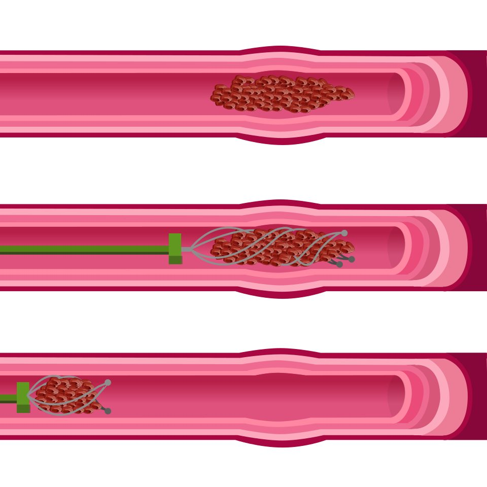

Qué es el código ictus
El código ictus es un protocolo de actuación que coordina a los servicios de emergencias, a los hospitales y a los neurólogos para que una persona con síntomas de ictus reciba el tratamiento adecuado en el menor tiempo posible. Funciona como una «vía rápida»: cuando se activa, cada eslabón de la cadena sabe que llega un paciente con ictus y se prepara antes de que llegue.
Nació porque los tratamientos que destapan la arteria, la trombólisis y la trombectomía, solo sirven si se aplican en las primeras horas, y su eficacia cae minuto a minuto. En un ictus grande sin tratar se pierden unos 1,9 millones de neuronas cada minuto. En España, todas las comunidades autónomas tienen un código ictus desde la Estrategia en Ictus del Sistema Nacional de Salud (2008), y Europa trabaja con el Plan de Acción del Ictus 2018-2030, que pide que el 90 % de los pacientes se atiendan en unidades de ictus.
Lo más importante: ante una cara torcida, un brazo que no responde o un habla extraña de aparición brusca, llama al 112. No vayas por tu cuenta a urgencias ni llames antes al médico de cabecera.
Paso a paso: de la llamada al tratamiento
1. Reconocer el ictus y llamar al 112 (minuto 0)
La cadena empieza con quien está al lado. Usa la regla FAST: cara torcida, brazo que cae, habla extraña, tiempo (llama ya). Al 112 le dirán qué hacer, y conviene tener preparada esta información:
- La hora exacta de inicio de los síntomas o, si se ha despertado así o nadie lo vio, la última vez que se le vio bien. Es el dato más importante para decidir el tratamiento.
- Qué síntomas tiene y si han mejorado.
- Qué medicamentos toma, sobre todo anticoagulantes (Sintrom, apixabán, rivaroxabán, dabigatrán, edoxabán). Si puedes, lleva la lista o las cajas.
- Si tenía antes alguna discapacidad, y sus enfermedades principales.
- Un teléfono de contacto de un familiar que pueda acudir al hospital: los médicos pueden necesitar datos o un consentimiento.
Mientras llega la ambulancia: tumba a la persona de lado si vomita o está somnolienta, no le des de comer, de beber ni medicamentos, y abre la puerta de casa.
2. Valoración de los servicios de emergencias (minutos 10-30)
El equipo del 112 confirma la sospecha con una escala sencilla, mide la glucosa (una bajada de azúcar puede imitar un ictus), la tensión y el ritmo cardiaco, y activa el código ictus: avisa al hospital de que llega un paciente candidato a tratamiento.
Muchos servicios usan escalas que estiman si hay una oclusión de una arteria grande, como la escala RACE creada en Cataluña. Si la puntuación es alta, el paciente puede ir directamente a un hospital con trombectomía, aunque no sea el más cercano. Es la decisión de «a qué hospital ir», que se toma en la calle y en minutos.
3. Llegada al hospital (minuto 0 de la «puerta»)
El equipo de ictus espera en la puerta de urgencias o en la sala de TC. El objetivo internacional es un tiempo puerta-aguja inferior a 60 minutos, y los mejores centros lo bajan a menos de 30. En pocos minutos:
- El neurólogo explora al paciente con la escala NIHSS.
- Se hace una TC craneal para descartar una hemorragia y, casi siempre a la vez, una angio-TC para ver si hay una arteria grande tapada, y a veces una TC de perfusión.
- Se extrae sangre, aunque en general no se espera a los resultados para empezar el tratamiento, salvo en quien toma anticoagulantes.
4. Trombólisis (si se puede, antes de 4,5 horas)
Si no hay hemorragia ni contraindicaciones, se administra un fármaco que disuelve el coágulo: tenecteplasa en una sola inyección o alteplasa en perfusión de una hora. En los pacientes que se despiertan con el ictus o con hora de inicio desconocida, la resonancia o la perfusión permiten tratar a algunos. Ver trombólisis y trombectomía.
5. Trombectomía (si hay una arteria grande tapada, hasta 24 horas)
Si la angio-TC muestra una oclusión de una arteria grande, el paciente pasa a la sala de neurorradiología intervencionista. Por un catéter desde la ingle o la muñeca se extrae el coágulo con un stent recuperable o por aspiración. Se hace aunque se haya puesto la trombólisis, y puede realizarse hasta 24 horas después en pacientes seleccionados por imagen (estudios DAWN y DEFUSE-3). Desde 2023 se sabe que beneficia incluso a pacientes con infartos ya extensos.
Cuando el primer hospital no tiene trombectomía, se usa el modelo «drip and ship»: se pone la trombólisis y se traslada al paciente al centro de referencia. Algunos lugares hacen lo contrario, llevar al neurorradiólogo al paciente.
6. Unidad de ictus (las primeras 48-72 horas)
Después, el paciente ingresa en una unidad de ictus, donde se vigilan la tensión, la glucosa, la temperatura, el ritmo cardiaco y la capacidad de tragar, y se empieza a buscar la causa y la rehabilitación.
Los tiempos que se miden
| Intervalo | Objetivo de calidad |
|---|---|
| Inicio de síntomas → llamada al 112 | Lo antes posible: es el retraso más largo y depende de la población |
| Llamada → llegada al hospital | Menos de 60 minutos |
| Puerta → TC | Menos de 20-25 minutos |
| Puerta → trombólisis (puerta-aguja) | Menos de 60 minutos, ideal menos de 30 |
| Puerta → punción femoral (trombectomía) | Menos de 90 minutos |
Por cada 15 minutos que se adelanta la trombólisis, más pacientes quedan independientes y menos mueren. En la trombectomía, cada hora de retraso reduce de forma clara la probabilidad de quedar sin secuelas.
Teleictus
En los hospitales comarcales sin neurólogo de guardia, el teleictus permite que un neurólogo de un hospital de referencia vea al paciente por videoconferencia, revise la TC a distancia y decida la trombólisis. Ha acercado el tratamiento a las zonas rurales y ha reducido las diferencias entre territorios.
Quién puede activarlo
- Cualquier persona, llamando al 112: es la forma más rápida.
- Los centros de salud y las urgencias de los hospitales que reciben al paciente por su cuenta. Llegar por tu cuenta suele retrasar el tratamiento, porque no se avisa antes y quizá no sea el hospital adecuado.
- Los propios hospitales, cuando un paciente ingresado por otro motivo presenta un ictus («código ictus intrahospitalario»).
Si los síntomas desaparecen
Un ataque isquémico transitorio también es una urgencia. Aunque la persona se encuentre bien, hay que ir al hospital ese mismo día: hasta uno de cada diez tiene un ictus completo en los días siguientes, y el estudio y el tratamiento precoces reducen mucho ese riesgo.
Mitos y errores que retrasan el código ictus
- Esperar a ver si se pasa o a que se despierte un familiar.
- Ir en coche propio al hospital más cercano en lugar de llamar al 112.
- Pensar que no es grave porque no duele: el ictus isquémico casi nunca duele.
- Llamar primero al médico de cabecera o a un familiar médico.
- Dar una aspirina: si es una hemorragia, puede empeorarla.
Qué preguntar en el hospital
- ¿Se ha podido poner trombólisis o hacer trombectomía? Si no, ¿por qué?
- ¿Qué tipo de ictus ha sido y qué arteria estaba afectada?
- ¿Cuánto tiempo estará en la unidad de ictus?
- ¿Cuándo empieza la rehabilitación?
Fuentes
- Ministerio de Sanidad. Estrategia en Ictus del Sistema Nacional de Salud. 2009.
- Norrving B, et al. Action Plan for Stroke in Europe 2018-2030. Eur Stroke J. 2018;3:309-36. doi:10.1177/2396987318808719.
- Pérez de la Ossa N, et al. Design and validation of a prehospital stroke scale to predict large arterial occlusion: the RACE scale. Stroke. 2014;45:87-91.
- Saver JL, et al. Time to treatment with endovascular thrombectomy and outcomes from ischemic stroke: a meta-analysis. JAMA. 2016;316:1279-88.
- Nogueira RG, et al. Thrombectomy 6 to 24 hours after stroke with a mismatch between deficit and infarct (DAWN). N Engl J Med. 2018;378:11-21.
- Berge E, et al. European Stroke Organisation guidelines on intravenous thrombolysis for acute ischaemic stroke. Eur Stroke J. 2021;6:I-LXII.
- Powers WJ, et al. Guidelines for the early management of patients with acute ischemic stroke: 2019 update. Stroke. 2019;50:e344-e418.